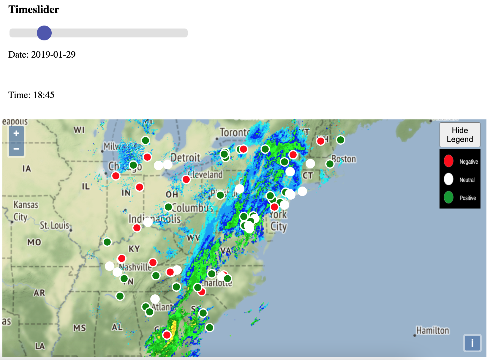

This series is me chronicling my adventure making a data pipeline. This pipe is outlined on GitLab here in the readme: https://gitlab.com/davleifer/polarbearGIS
This is the tenth part in a series used to build my website: https://www.davidjleifer.com/
Part 1: https://www.davidjleifer.com/blogs/part1.html
Part 2: https://www.davidjleifer.com/blogs/part2.html
Part 3: https://www.davidjleifer.com/blogs/part3.html
Part 4: https://www.davidjleifer.com/blogs/part4.html
Part 5: https://www.davidjleifer.com/blogs/part5.html
Part 6: https://www.davidjleifer.com/blogs/part6.html
Part 7: https://www.davidjleifer.com/blogs/part7.html
Part 8: https://www.davidjleifer.com/blogs/part8.html
Part 9: https://www.davidjleifer.com/blogs/part9.html
Part 11: https://www.davidjleifer.com/blogs/part11.html
Part 12: https://www.davidjleifer.com/blogs/part12.html
Part 13: https://www.davidjleifer.com/blogs/part13.html
Part 14: https://www.davidjleifer.com/blogs/part14.html
Remember all that stuff we did in part 9 of this series? Forget about it! In this chapter, we will rewrite the 2019 Polar Vortex web application to actually work and not crash the browser.
Step 1: Importing modules, transforming the extent, and defining some maps
In the first part of our main.js file, we will import the required modules and set a variable “extent” as the “transformExtent” module from ol proj. This will change the projection from ESPG: 4326 WGS 1984 to ESPG: 3857 pseudo-web mercator, a popular web mapping projection.
import 'ol/ol.css';
import Map from 'ol/Map';
import Stamen from 'ol/source/Stamen';
import TileLayer from 'ol/layer/Tile';
import TileWMS from 'ol/source/TileWMS';
import GeoJSON from 'ol/format/GeoJSON';
import VectorLayer from 'ol/layer/Vector';
import VectorSource from 'ol/source/Vector';
import Layer from 'ol/layer/Layer';
import View from 'ol/View';
import {getCenter} from 'ol/extent';
import {transformExtent} from 'ol/proj';
import {transform} from 'ol/proj';
import {Style, Fill, Stroke, Circle} from 'ol/style';
import 'regenerator-runtime/runtime';
import geojson from './data/*.geojson'
//create extent and use it in the VectorLayer called all_ween
var extent = transformExtent([-89.30, 24.71, -64.70, 48.07], 'EPSG:4326', 'EPSG:3857');
After that, we need to create a variable named “map” which will be the core “Map” variable we add all of our layers to and accepts parameters for centering and zooming the view. We also create a “basemap” const variable which accepts the source parameter as a Stamen terrain layer. Then we create a “radar” variable which accepts the “extent” variable from before in the extent parameter. The source is the Iowa State University Mesonet precipitation radar data. Finally, we add the “basemap” and “radar” variables to the core “map” variable.
//define basemap and radar as a TileLayer
const basemap = new TileLayer({
source: new Stamen({
layer: 'terrain',
}),
});
const radar = new TileLayer({
extent: extent,
source: new TileWMS({
attributions: ['Iowa State University'],
url: 'https://mesonet.agron.iastate.edu/cgi-bin/wms/nexrad/n0r-t.cgi',
params: {'LAYERS': 'nexrad-n0r-wmst'},
}),
});
/* Add to map */
map.addLayer(basemap);
map.addLayer(radar);Step 2: Creating some empty arrays and looping over the geojson data
Next we will create two empty array variables called “dates” and “all_ween_array”. Um… I think I was going through the band Ween’s discography when I was writing this code. Don’t think about it!
Remember all those geojson files we made with specific date and time attributes with python? We imported that data as an object called “geojson” in our imports in Step 1.
We will set up a simple for loop over all these geojson files and call that const variable “property”. We feed that “property” into the const variable “ween” as a new VectorSource. Then we feed the “ween” into the const variable “all_ween” as a new VectorLayer. Then we create a const variable called “property_t” which is just the date time with the space replaced with a “T” string. We push all the date time strings into our empty variable “dates” and the “all_ween” variables into our empty array “all_ween_array”.
//empty array for our dates and all_ween_array
var dates = [];
var all_ween_array = [];
//loop over each property of the geojson object and add it to the all_ween_array
for (const property in geojson) {
const ween = new VectorSource({
url: geojson[property],
format: new GeoJSON(),
});
//create the layers for the point_changer function
const all_ween = new VectorLayer({
extent: extent,
source: ween,
});
//push property (our datetime) to empty array called dates
const property_t = property.replace(/\s/g, 'T')
dates.push(property_t + ".000Z")
//push layer to empty all_ween_array
all_ween_array.push(all_ween)
//console.log(`${property}: ${geojson[property]}`);
};
Step 3: Making an event listener to change the layers
Next we utilize an “addEventListener” to “listen” for ‘change’ on the “radar” variable. This is based on the following function “point_changer”. In this function we create a variable named “el” which gets the text content of our element from our html document named ‘date_value’. We feed our “all_ween_array” variable into the Object.keys method which gives us the array’s own property names in order. We execute the function by it’s key in a forEach loop where if the variable “el” equals the variable “dates” at that key, we add our “all_ween_array” layer at that key to the “map”. Else, we remove the other layers from the “map”.
//event listener to change the layers, depends on the key
radar.addEventListener('change', point_changer, false);
function point_changer(){
var el = document.getElementById('date_value').textContent;
//console.log(el)
Object.keys(all_ween_array).forEach(function(key){
if (el == dates[key]){
map.addLayer(all_ween_array[key]);
//console.log(all_ween_array[key])
}
else {
map.removeLayer(all_ween_array[key]);
}
});
};
Step 4: Adding some style variables, for style
Not much going on here, just making “white”, “green”, and “red” variables as new Fills and feeding them into the variables “white_style”, “green_style”, and “red_style”. We also make a sneaky variable named “invis” and feed it into the variable “invis_style”. This allows us to load all the variables into the map document but make them invisible until we need to show them. It’s a surprise tool that will help us later.
//fill vars
var white = new Fill({color: 'white'});
var green = new Fill({color: 'green'});
var red = new Fill({color: 'red'});
//rgba opacity
var invis = new Fill({color: 'rgba(255, 0, 0, 0)'});
//create color style vars
var white_style = new Style({
image: new Circle({
radius: 7,
fill: white,
stroke: new Stroke({
color: [255,255,255], width: 2
})
})
});
var green_style = new Style({
image: new Circle({
radius: 7,
fill: green,
stroke: new Stroke({
color: [255,255,255], width: 2
})
})
});
var red_style = new Style({
image: new Circle({
radius: 7,
fill: red,
stroke: new Stroke({
color: [255,255,255], width: 2
})
})
});
var invis_style = new Style({
image: new Circle({
radius: 0,
fill: invis,
stroke: new Stroke({
color: [255,255,255,0], width: 0
})
})
});
//apply invis style so when the layer is loaded async the default style goes away
for (const l in all_ween_array) {
all_ween_array[l].setStyle(invis_style);
};Step 5: Using the promise and await function to load the style asynchronously
We have to load the style somehow based on the sentiment analysis score. First we create a function called “resolveAfter2Seconds” which is the promise. It’s function is to pause the load by 500 milliseconds and add an event listener to listen for ‘change’ on the “radar” variable.
The actual async function is called stylepoints(). It creates a variable “x” which holds the promise to await our resolveAfter2Seconds function. Then in a for loop, we create a const variable called “k” for each layer in the “all_ween_array”. Then for each variable “k” in the “all_ween_array”, we use the method getSource() and loop over them in a function where if the “feature” has a compound score equal to 0, we set the style as “white_style”. Else if the “feature” has a compound score greater than 0, we set the style to “green_style”. Else we set the “feature” style to “red_style”.
//Proimise and await. who came up with that, its a(time)sync function
function resolveAfter2Seconds(x) {
return new Promise(resolve => {
setTimeout(() => {
resolve(x);
}, 500);
radar.addEventListener('change', style_points, false);
});
};
async function style_points() {
var x = await resolveAfter2Seconds(10);
for (const k in all_ween_array) {
all_ween_array[k].getSource().forEachFeature(function(feature){
if ((feature.get('compound') === 0)) {
feature.setStyle(white_style)
}
else if (feature.get('compound') > 0) {
feature.setStyle(green_style)
}
else{
feature.setStyle(red_style)
}
})
}
};
style_points();Step 6: Define the code in the time slider
Now we need to create a variable called “sliderRange” to get the html document by ID ‘myRange’. Then we define the range with the length of the “dates” array. We also create a “dateValue” variable to hold the document’s ID “date_value”. We update the “dateValue” innerHTML to be the “dates” “sliderRange” value. Then we get the source of the “radar” variable and update the ‘TIME’ parameter with the “dates” “sliderRange” value.
//define the slider and do some stuff
var sliderRange = document.getElementById("myRange");
sliderRange.max = dates.length-1;
var dateValue = document.getElementById("date_value");
dateValue.innerHTML = dates[sliderRange.value];
radar.getSource().updateParams({'TIME': dates[sliderRange.value]});
Step 7: Split the dates array into date date and time
Now we create empty arrays called “date_date” and “time”. We loop over the “dates” array and create the iterator as a variable named “i”. We set a variable as “date_part” to hold the substring of our “dates” and push it into the empty array “date_date”. We also make a variable called “time_part_0” and create that as the time substring of “dates” and use that to define the index of another variable called “time_part” and push that into the empty array called “time”.
//split dates array object and put into two arrays date_date and time
var date_date = [];
var time = [];
for (var i in dates){
var date_part = dates[i].substring(0, dates[i].indexOf("T"));
var time_part_0 = dates[i].substring(dates[i].indexOf("T") + 1);
var time_part = time_part_0.substring(0, time_part_0.indexOf(":00."));
date_date.push(date_part)
time.push(time_part)
}
Step 8: Put our date and time into elements in the doc and update them on slide
We need to create a variable named “dateSub” and update that document element with the “date_date” value. Then the same thing for the “time_sub” variable, update the document element with the “time” variable.
Finally, a function is created to update the “radar” values TIME parameter based on the values of “dateSub” and “time_sub”.
//put into dateSub id
var dateSub = document.getElementById("date_sub");
dateSub.innerHTML = date_date[sliderRange.value];
//put into timeSub id
var time_sub = document.getElementById("time_sub");
time_sub.innerHTML = time[sliderRange.value];
// Update the current slider value (each time you drag the slider handle)
sliderRange.oninput = function() {
dateValue.innerHTML = dates[this.value];
dateSub.innerHTML = date_date[this.value];
time_sub.innerHTML = time[this.value];
radar.getSource().updateParams({'TIME': dates[this.value]});
};

This series is me chronicling my adventure making a data pipeline. This pipe is outlined on GitLab here in the readme: https://gitlab.com/davleifer/polarbearGIS
This is the tenth part in a series used to build my website: https://www.davidjleifer.com/
Part 1: https://www.davidjleifer.com/blogs/part1.html
Part 2: https://www.davidjleifer.com/blogs/part2.html
Part 3: https://www.davidjleifer.com/blogs/part3.html
Part 4: https://www.davidjleifer.com/blogs/part4.html
Part 5: https://www.davidjleifer.com/blogs/part5.html
Part 6: https://www.davidjleifer.com/blogs/part6.html
Part 7: https://www.davidjleifer.com/blogs/part7.html
Part 8: https://www.davidjleifer.com/blogs/part8.html
Part 9: https://www.davidjleifer.com/blogs/part9.html
Part 11: https://www.davidjleifer.com/blogs/part11.html
Part 12: https://www.davidjleifer.com/blogs/part12.html